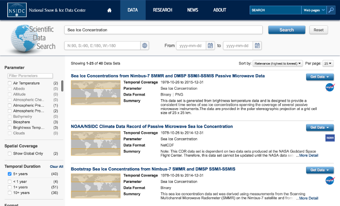

Portfolio more info

Artic Data Explorer
A search and discovery application for diverse arctic data

GOES-R Control Segment
Apache Storm application to coordinate running of dozens of algorithms in parallel for a real-time data stream
No link - private code

Water Column Sonar
Data extraction and delivery for water column sonar science data